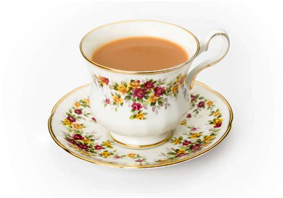

Tea

Description
A fragrant and flavorful spiced tea that combines black tea with aromatic spices for a comforting and warming
beverage.
Ingredients
- 2 cups water
- 1 cup milk
- 2 tsp black tea leaves
- 2-3 cardamom pods
- 1 cinnamon stick
- 3-4 cloves
- 1 small piece of ginger (sliced)
- 2 tsp sugar (or to taste)
Steps
- Bring water to a boil in a saucepan.
- Add the cardamom pods, cinnamon stick, cloves, and ginger to the boiling water.
- Let the spices simmer for 3-5 minutes.
- Add the black tea leaves and let it steep for another 2 minutes.
- Pour in the milk and bring the mixture to a boil.
- Add sugar and stir until it dissolves.
- Strain the tea into cups and serve hot.